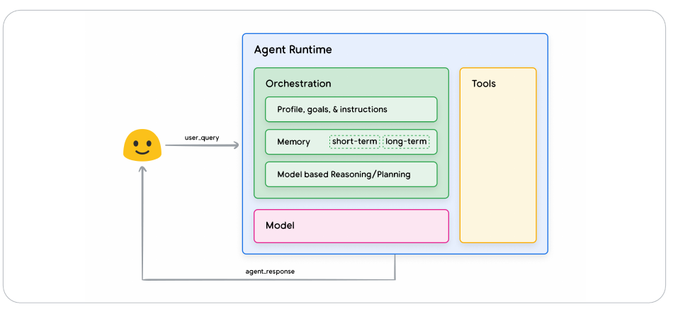
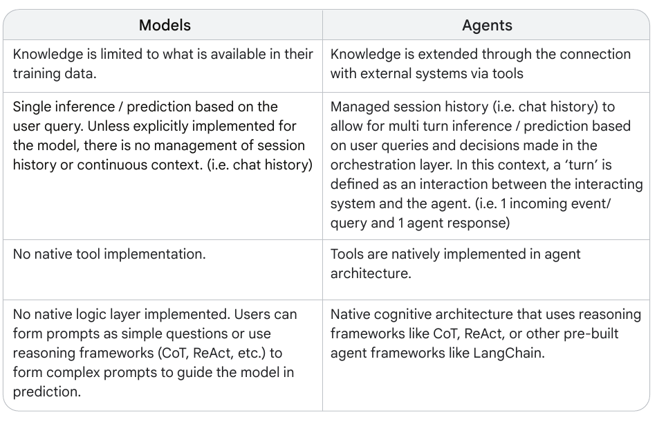
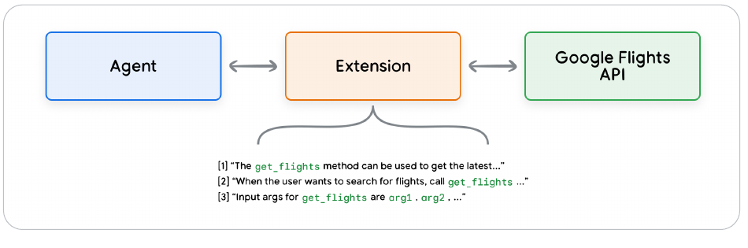
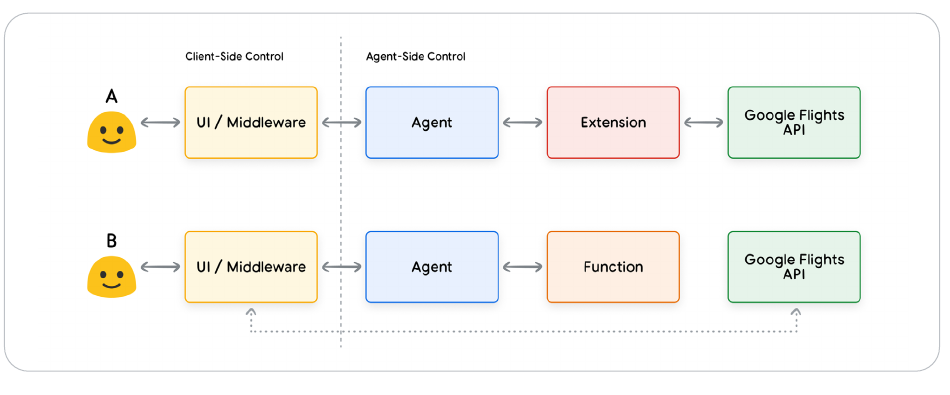
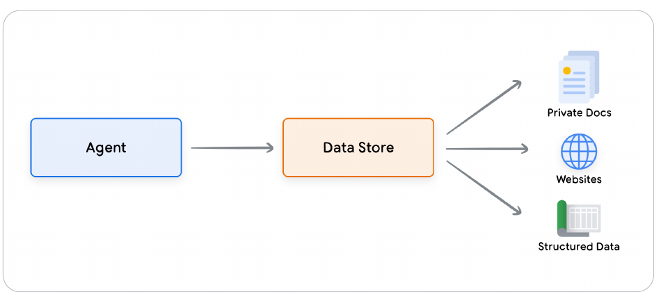
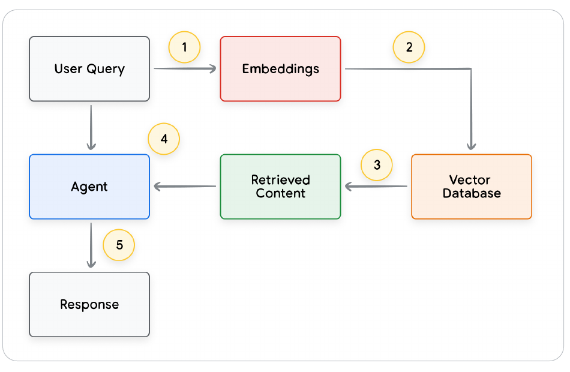

Reading Notes
Agents from Google: A Systems View of Models, Tools, and Orchestration
A systems-oriented guide to what turns a language model into an agent, how tool interfaces shape control and data flow, and where learning enters the architecture.
A language model can reason about a request, but reasoning alone does not let it inspect a private database, reserve a flight, or continue working across multiple turns. Google's Agents white paper offers a compact systems view of the missing pieces. Its central claim is architectural: an agent is not simply a more capable model. It is an application that combines a model, a set of tools, and an orchestration loop to observe, decide, and act toward a goal.
What is an agent?
An agent is an application that pursues a goal by observing its environment and acting through the tools available to it. The important word is pursues. Rather than waiting for a human to prescribe every step, the system can choose a next action, inspect the result, and revise its plan.
Agency is therefore a property of the entire runtime, not of the language model alone. The model may generate the reasoning behind the next action, but the surrounding application supplies memory, permissions, tool definitions, execution, and the feedback that closes the loop.
The three core components
The white paper divides a basic agent into three cooperating parts:

The model
The model serves as the central decision maker. Depending on the application, an agent may use one or several language models: small or large, general-purpose or specialized, text-only or multimodal. Reasoning frameworks such as ReAct, Chain-of-Thought, and Tree-of-Thoughts can help the model decompose a task and select an action.
One important caveat is that the base model is rarely trained for the exact combination of tools and orchestration used by a particular agent. The runtime must therefore communicate its local interface through instructions, tool schemas, and examples. Model capability matters, but so does the clarity of the system around it.
The tools
Tools connect the agent's internal reasoning to external information and actions. They can retrieve current or private data, execute code, call an API, or trigger a real-world operation. Without tools, even a highly capable model remains bounded by its training data and the information placed in its context window.
The orchestration layer
Orchestration is the recurring control process: receive information, reason over the current state, choose an action, execute it, observe the result, and decide what to do next. It also manages the agent's profile, instructions, short- and long-term memory, stopping conditions, and error handling. In practice, this layer determines whether isolated model calls form a coherent multi-step system.
Agents vs. models
The difference is architectural. A standalone model maps an input to an output. An agent embeds that model within state, tools, and a policy for continuing the interaction. Four practical distinctions follow:

- Knowledge: a model is limited to its parameters and current context; an agent can reach external systems.
- State: a model call is normally a single prediction; an agent can maintain history and memory across turns.
- Action: a model describes or proposes; an agent can invoke tools and feed the result back into the next decision.
- Control: a model follows a prompt; an agent adds a native loop for planning, execution, observation, and termination.
This framing also explains why agent quality cannot be judged from model benchmarks alone. Tool selection, argument generation, state management, recovery, and the execution environment all contribute to end-to-end reliability.
Tools as the interface to the world
The white paper groups Google's agent tools into three categories: Extensions, Functions, and Data Stores. All three expand what the model can access, but each places execution and control at a different point in the system.
Extensions: standardized, agent-side API access
An Extension provides a standardized bridge between an agent and an API. Along with the endpoint, it supplies descriptions and examples that teach the agent when the capability is useful and which arguments it requires. At runtime, the model selects an appropriate Extension and the agent-side system performs the call.

This design is especially useful when the agent should directly control a sequence of API interactions. Examples embedded in the Extension act as interface-level demonstrations, helping the model infer both when to call the tool and how to format the request.
Functions: model-generated intent, client-side execution
Function calling separates the model's decision from execution. The model returns a function name and its arguments, while the client application decides whether and how to run it. The client can authenticate the request, validate or transform arguments, enforce ordering, request human approval, and reshape the returned data before passing it back to the agent.

The distinction may look minor in a diagram, but it changes the system's trust boundary. Functions are the better fit when security, authentication, data governance, human review, timing constraints, or custom business logic require the application to retain control.
Data Stores: grounding with dynamic knowledge
A Data Store gives an agent access to information that is absent from the base model or changes too frequently to encode in its weights. Documents, websites, tables, and other sources are indexed by a retrieval system. The agent can then fetch relevant content at runtime without retraining the model or turning every source into a handcrafted tool.

Retrieval-augmented generation is the most familiar implementation. The system embeds a query, matches it against a vector database, and retrieves supporting content. The agent receives both the original request and the retrieved evidence, then produces a response or chooses another action.

Choosing among the three
| Tool type | Execution | Best fit |
|---|---|---|
| Extension | Agent-side | Native API integrations and multi-hop workflows where the agent should control the next call. |
| Function | Client-side | Protected APIs, human review, strict sequencing, transformations, and application-owned execution. |
| Data Store | Agent-side | Retrieval over private, current, structured, or unstructured knowledge. |
These categories are complementary. A production agent might retrieve a policy from a Data Store, use a Function to obtain approval, and then invoke an Extension to complete the external action.
Enhancing performance with targeted learning
Giving a model access to a tool does not guarantee that it will select the right tool, supply valid arguments, or know when to stop. The white paper describes three ways to teach this task-specific behavior:
- In-context learning. Place tool definitions, instructions, and a small set of demonstrations directly in the inference context. ReAct is a natural-language example of this approach.
- Retrieval-based in-context learning. Retrieve the most relevant tools and demonstrations from external memory for each request, keeping the prompt focused as the tool library grows.
- Fine-tuning. Train on a larger collection of tool-use examples so that the model internalizes recurring selection and argument patterns before inference.
These approaches trade deployment effort for specialization. Prompted examples are quick to iterate, retrieval scales the available repertoire, and fine-tuning can make repeated behavior more consistent. They can also be combined: retrieval may supply task-specific context to a model already fine-tuned for structured tool use.
Takeaways
The strongest lesson I take from the white paper is that designing an agent means designing interfaces and feedback loops. The model matters, but the working system is defined by what it can observe, which actions it may propose, where those actions execute, and how their results inform the next decision.
- Agency lives in the runtime. Memory, tools, and orchestration turn predictions into goal-directed behavior.
- Tool choice is also a control choice. Extensions, Functions, and Data Stores place authority and data flow in different locations.
- Examples are part of the interface. A schema says what a tool accepts; demonstrations teach the model when and how to use it.
- Reliability is end-to-end. A better model helps, but validation, permissions, recovery, retrieval quality, and stopping rules remain system-level responsibilities.
As tools and reasoning improve, specialized agents may be composed into a broader "mixture of agent experts." The white paper closes with appropriately practical advice: complex agent architectures require experimentation and refinement because the right balance of model, tools, and orchestration depends on the task and its operational constraints.
Sources
- Julia Wiesinger, Patrick Marlow, and Vladimir Vuskovic. Agents. Google, September 2024.
- My original reading notes in Notion.
Figures are cropped from the Google white paper for commentary and study. The explanatory text is my own synthesis of the paper and the original reading notes.